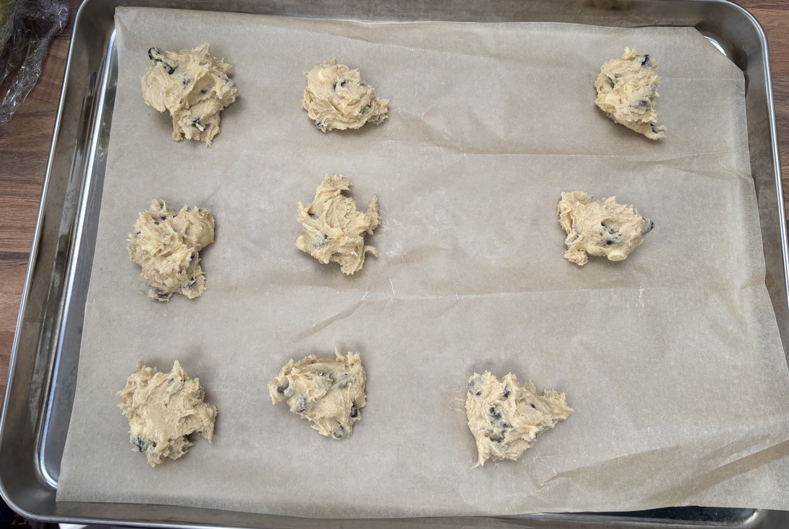

Choc chip cookies
Notes
- Ratios
- 1.0 butter
- 1.5 sugar
- 1.6 flour
- 1.3 chocolate
- Sugar: mix half golden caster and light-brown
- Chocolate chips: use equal amounts of white, milk and dark
- Careful not to overbake
- Cook in 2 batches of 10 cookies each
Recipe
- Preheat oven to 160°C
- Line baking trays with baking paper
- Combine in a bowl
- 100g butter warmed
- 150g sugar
- 1 tsp vanilla extract
- 1 egg room temperature & lightly beaten
- Mix in till firm
- 160g self-raising flour
- 130g chocolate chips
- Place dough blobs onto cool baking tray and press down slightly
- Bake at 160°C for 11-13 mins
- Leave to cool for 5 mins
- Move to cooling rack
Pics
